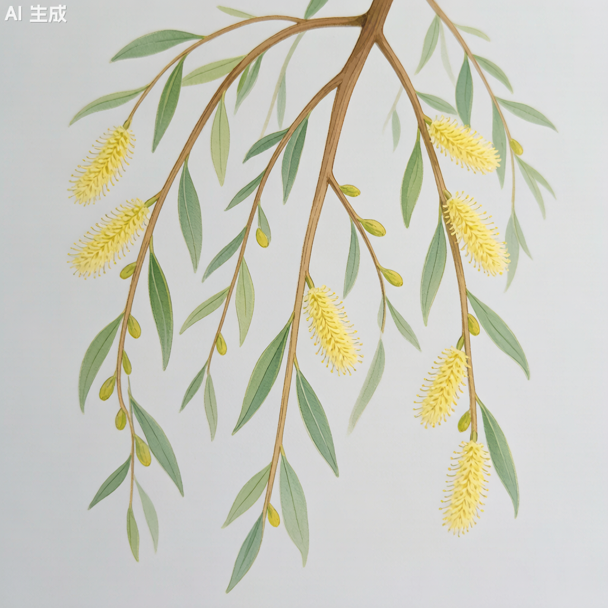

垂柳 Salix babylonica

形态特征
垂柳（Salix babylonica）为落叶乔木，高10–18米。树皮灰黑色，不规则纵裂。枝条细长，小枝黄色或褐色，无毛，柔软而下垂，是其最显著的形态特征。叶狭披针形或线状披针形，长8–16厘米，宽0.5–1.5厘米，先端长渐尖，基部楔形，边缘有细锯齿。叶面绿色，背面灰绿色或带白色。托叶披针形，早落。葇荑花序，雌雄异株，先叶开放或与叶同时开放。雄花序长2–4厘米，花丝短，花药黄色；雌花序长1.5–2.5厘米，子房卵形。蒴果，2瓣裂。种子细小，有白色丝状毛（柳絮）。花期3–4月，果期4–5月。
分布与生境
垂柳广泛分布于长江流域及以南各省，为中国南北各地普遍栽培的水边观赏树。喜光，喜温暖湿润气候，耐水湿，极耐水淹，能在浅水中生长，但不耐干旱。对土壤要求不严，在酸性、中性及微碱性土壤中均可生长，以深厚肥沃的冲积土最为适宜。根系发达，生长迅速。
分类学
垂柳为杨柳科（Salicaceae）柳属（Salix）植物。种加词"babylonica"意为"巴比伦的"，源于圣经中"巴比伦河边的柳树"的典故，但该物种真实原产地为中国而非巴比伦。柳属全球约400种，主要分布于北温带。垂柳与旱柳（S. matsudana）的区别在于：垂柳枝条下垂、叶狭披针形、小枝黄色；旱柳枝条直立或斜上、叶卵状披针形、小枝绿色。
生态习性
垂柳为强阳性树种，不耐荫蔽。喜水湿，极耐水淹，在水淹深度可达1米的环境中存活数月。根系发达，主根不深但侧根水平伸展极为宽广。生长速度极快，是阔叶树中生长最快的物种之一，3–5年即可成景。寿命较短，通常30–50年。垂柳春季产生大量柳絮（种子的绒毛），随风飘散，是北方春季常见的"飞絮"来源。柳树对二氧化硫、氯气等有害气体有较强的吸收能力，是良好的环境监测和净化植物。
利用与文化
垂柳在中国文化中占有独特地位。"柳"与"留"谐音，古人有"折柳送别"的习俗，表达惜别之情。"碧玉妆成一树高，万条垂下绿丝绦"（贺知章《咏柳》）是对垂柳形态最经典的描写。"杨柳依依"、"烟柳画桥"等意象描绘了江南水乡的经典画面。垂柳是诗词中最常见的植物意象之一。垂柳的枝条柔韧性好，可用于编织柳条箱、柳篮等。柳叶和柳芽富含水杨苷（与阿司匹林活性成分类似），民间用其泡茶治疗头痛发热。柳树皮中提取的水杨酸是阿司匹林的天然前体。
参考文献
- 《中国植物志》第20卷: 87页. 科学出版社.
- 杨昌友. 2000. 中国柳属植物分类研究. 植物分类学报.
- 程杰. 2008. 中国柳文化研究. 文学遗产.